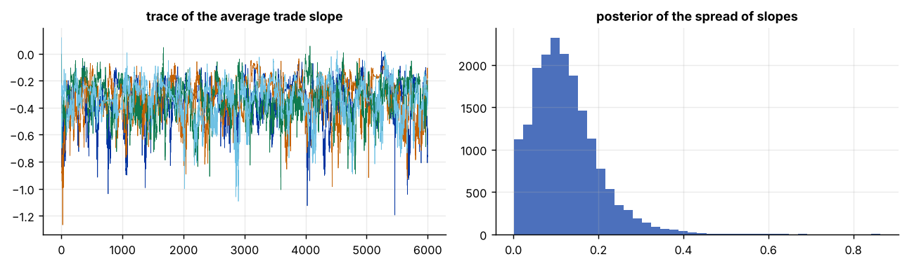
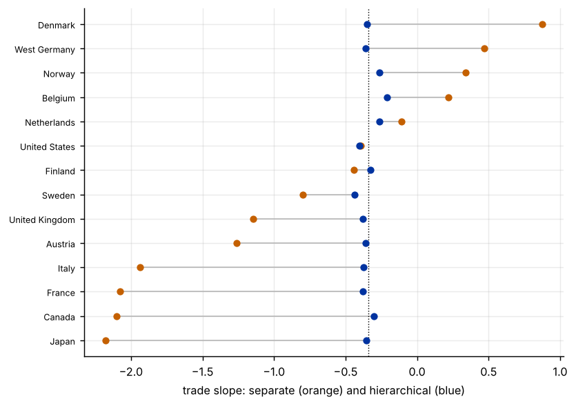

Step 1The question and the model
Does trade openness raise growth, and is the effect the same in every country? Three simple answers exist. A pooled or fixed-effects regression gives one slope for all countries. A regression for each country gives 14 slopes, each estimated from 25 annual observations and therefore noisy. A hierarchical model sits between them:
where \(g\) is GDP growth, trade is trade openness per ten percentage points of GDP, and unem is the unemployment rate. The country slopes come from a common distribution with mean \(\mu_\beta\) and spread \(\sigma_\beta\), both estimated. If \(\sigma_\beta\) is small, the slopes are shrunk strongly towards \(\mu_\beta\) (nearly complete pooling); if it is large, the country estimates are left almost alone (no pooling). The data decide how much to pool.
The priors are weak: normal priors with standard deviation 10 for \(\mu_\alpha,\mu_\beta,\gamma\) and, for the spread of slopes, a half-Cauchy prior (Gelman 2006), which behaves better than the diffuse inverse-gamma with few groups. We sample by Gibbs.
With 14 groups, the prior on the spread matters
The posterior of \(\sigma_\beta\) is estimated from only 14 country slopes. A diffuse inverse-gamma prior can put too much mass on very large or very small spreads, which changes the amount of shrinkage. Report the sensitivity of the country slopes to the prior on \(\sigma_\beta\) (Step 7) and use a half-Cauchy or half-normal prior with a scale that makes sense for the units.
How to write it: the model
We estimate a Bayesian hierarchical panel regression of GDP growth on trade openness (per ten percentage points of GDP) and the unemployment rate, for 14 OECD countries over 1966–1990. The intercept and the trade coefficient vary across countries and are drawn from normal distributions with unknown means and variances; the unemployment coefficient is common. The priors are normal with standard deviation 10 for the means and the common coefficient, a half-Cauchy prior with scale 1 for the standard deviation of the trade slopes and scale 5 for the standard deviation of the intercepts, and an inverse-gamma(0.01, 0.01) prior for the error variance. We draw four chains of 6,000 iterations with the first 1,500 discarded as burn-in, and check convergence with the split-\(\hat R\) statistic and the effective sample size.
Step 2Load the data and look at the heterogeneity
import warnings; warnings.filterwarnings("ignore")
import numpy as np, pandas as pd, statsmodels.api as sm
import matplotlib.pyplot as plt
d = pd.read_csv("garrett.csv").sort_values(["country", "year"]).reset_index(drop=True)
d["trade10"] = d.trade / 10
cs = list(d.country.unique()); N = len(cs); g = d.country.map({c: i for i, c in enumerate(cs)}).values
y = d.gdp_growth.values; x = d.trade10.values; z = d.unem.values
print(f"{len(d)} observations, {N} countries, {d.year.min()}-{d.year.max()} ({len(d) // N} years each)")
pooled = sm.OLS(y, sm.add_constant(np.column_stack([x, z]))).fit(cov_type="cluster", cov_kwds={"groups": g})
fe = sm.OLS(y, np.column_stack([x, z, pd.get_dummies(g).values.astype(float)])).fit(cov_type="cluster", cov_kwds={"groups": g})
print(f"Pooled OLS: trade slope {pooled.params[1]:.3f} (cluster s.e. {pooled.bse[1]:.3f}); fixed effects: {fe.params[0]:.3f} ({fe.bse[0]:.3f})")
sep = []
for i, c in enumerate(cs):
m = g == i; r = sm.OLS(y[m], np.column_stack([np.ones(m.sum()), x[m], z[m]])).fit()
sep.append((c, r.params[1], r.bse[1]))
sep = pd.DataFrame(sep, columns=["country", "slope", "se"]).set_index("country")
print("\nSeparate regressions for each country (trade slope per 10 points of openness):")
print(sep.round(2).T.to_string())
print(f"\nSpread of the 14 separate slopes: {sep.slope.std():.2f}; average squared standard error: {np.sqrt((sep.se ** 2).mean()):.2f} (root)")350 observations, 14 countries, 1966-1990 (25 years each) Pooled OLS: trade slope -0.139 (cluster s.e. 0.083); fixed effects: -0.537 (0.272) Separate regressions for each country (trade slope per 10 points of openness): country Austria Belgium Canada Denmark Finland France Italy Japan Netherlands Norway Sweden United Kingdom United States West Germany slope -1.26 0.22 -2.1 0.87 -0.44 -2.08 -1.94 -2.18 -0.11 0.34 -0.8 -1.15 -0.39 0.47 se 0.50 0.39 1.3 1.05 0.90 0.66 0.61 1.58 0.67 0.70 0.4 0.81 1.85 1.43 Spread of the 14 separate slopes: 1.05; average squared standard error: 1.02 (root)
How to read it
There are 14 countries with 25 annual observations each. Pooled OLS gives a trade slope of −0.14 (cluster s.e. 0.08) and the fixed-effects regression −0.54 (0.27), so even the pooled estimates disagree. The separate country regressions range from −2.18 (Japan) to +0.87 (Denmark), a spread of 1.05 across the 14 slopes. But their standard errors are as large as the spread itself (the root of the average squared standard error is 1.02), so the apparent heterogeneity could be pure sampling noise. The hierarchical model estimates how much of it is real.
Step 3The Gibbs sampler
def gibbs(y, x, z, g, N, iters=4000, seed=0, prior="hc", A_b=1.0, A_a=5.0, init=None):
rng = np.random.default_rng(seed); n = len(y)
th = np.zeros((N, 2)); mu = np.zeros(2); s2 = np.array([1.0, 1.0]); gam = 0.0; sig2 = 1.0; a = np.array([1.0, 1.0])
if init is not None: th += init * rng.standard_normal((N, 2)); mu = init * rng.standard_normal(2)
members = [np.where(g == i)[0] for i in range(N)]
out = {k: [] for k in ["mu", "s", "gam", "sig", "th"]}
for it in range(iters):
u = y - gam * z
for i, ix in enumerate(members): # country intercepts and slopes
Xi = np.column_stack([np.ones(len(ix)), x[ix]])
V = np.linalg.inv(Xi.T @ Xi / sig2 + np.diag(1 / s2)); m = V @ (Xi.T @ u[ix] / sig2 + mu / s2)
th[i] = rng.multivariate_normal(m, V)
for j in range(2): # hyper-means
v = 1 / (N / s2[j] + 1 / 100); mu[j] = rng.normal(v * th[:, j].sum() / s2[j], np.sqrt(v))
for j, A in enumerate([A_a, A_b]): # hyper-variances
ss = ((th[:, j] - mu[j]) ** 2).sum()
if prior == "hc": # half-Cauchy(A) through a parameter-expanded inverse-gamma
s2[j] = 1 / rng.gamma((N + 1) / 2, 1 / (ss / 2 + 1 / a[j])); a[j] = 1 / rng.gamma(1, 1 / (1 / A ** 2 + 1 / s2[j]))
else: # inverse-gamma(0.01, 0.01)
s2[j] = 1 / rng.gamma(.01 + N / 2, 1 / (.01 + ss / 2))
r = y - th[g, 0] - th[g, 1] * x # common coefficient on unemployment
v = 1 / (z @ z / sig2 + 1 / 100); gam = rng.normal(v * (z @ r) / sig2, np.sqrt(v))
e = y - th[g, 0] - th[g, 1] * x - gam * z
sig2 = 1 / rng.gamma(.01 + n / 2, 1 / (.01 + e @ e / 2))
out["mu"].append(mu.copy()); out["s"].append(np.sqrt(s2)); out["gam"].append(gam); out["sig"].append(np.sqrt(sig2)); out["th"].append(th.copy())
return {k: np.array(v) for k, v in out.items()}
def rhat_ess(chains):
"""split R-hat and effective sample size for an (m chains) x (n draws) array"""
c = np.vstack([ch[:len(ch) // 2] for ch in chains] + [ch[len(ch) // 2:2 * (len(ch) // 2)] for ch in chains]); m, n = c.shape
B = n * c.mean(1).var(ddof=1); W = c.var(1, ddof=1).mean(); rh = np.sqrt(((n - 1) / n * W + B / n) / W)
x_ = c - c.mean(1, keepdims=True); rho_sum = 0
for l in range(1, n // 2):
rho = np.mean([np.corrcoef(r[:-l], r[l:])[0, 1] for r in x_])
if rho < .0: break
rho_sum += rho
return rh, m * n / (1 + 2 * rho_sum)
burn = 1500; chains = [gibbs(y, x, z, g, N, 6000, seed=s, init=1.5) for s in range(4)]
post = {k: np.concatenate([c[k][burn:] for c in chains]) for k in chains[0]}
rows = []
for lab, f in [("mu_beta (average trade slope)", lambda c: c["mu"][burn:, 1]), ("sigma_beta (spread of slopes)", lambda c: c["s"][burn:, 1]), ("mu_alpha", lambda c: c["mu"][burn:, 0]),
("sigma_alpha", lambda c: c["s"][burn:, 0]), ("gamma (unemployment)", lambda c: c["gam"][burn:]), ("sigma (error)", lambda c: c["sig"][burn:])]:
rh, ess = rhat_ess([f(c) for c in chains]); rows.append((lab, rh, ess))
print(pd.DataFrame(rows, columns=["parameter", "split R-hat", "effective sample size"]).round(3).to_string(index=False))
print(f"\n{len(post['gam']):,} retained draws from 4 chains; largest R-hat across the 14 country slopes: {max(rhat_ess([c['th'][burn:, i, 1] for c in chains])[0] for i in range(N)):.3f}")
fig, ax = plt.subplots(1, 2, figsize=(10, 3))
for c in chains: ax[0].plot(c["mu"][:, 1], lw=.4)
ax[0].set_title("trace of the average trade slope"); ax[1].hist(post["s"][:, 1], bins=40, color="#0033a0", alpha=.7); ax[1].set_title("posterior of the spread of slopes"); plt.tight_layout() parameter split R-hat effective sample size
mu_beta (average trade slope) 1.005 315.213
sigma_beta (spread of slopes) 1.004 366.114
mu_alpha 1.004 358.032
sigma_alpha 1.007 611.569
gamma (unemployment) 1.007 804.192
sigma (error) 1.000 10948.460
18,000 retained draws from 4 chains; largest R-hat across the 14 country slopes: 1.006
How to read it
The four chains agree: split R-hat is below 1.01 for every parameter and for all 14 country slopes (largest 1.006). The effective sample sizes are 315 for the average slope and 366 for the spread of slopes out of 18,000 draws, which is adequate for posterior means and 90% sets but low, because the sampler moves slowly when the spread is close to zero (the usual funnel problem of hierarchical models). Report them, and use more iterations if you need precise tail probabilities.
Step 4Results: partial pooling
ci = lambda v: np.percentile(v, [5, 95])
print(f"Average trade slope: posterior mean {post['mu'][:, 1].mean():.3f}, 90% credible set {np.round(ci(post['mu'][:, 1]), 3)}; P(positive) = {(post['mu'][:, 1] > 0).mean():.2f}")
print(f"Spread of country slopes (sigma_beta): median {np.median(post['s'][:, 1]):.3f}, 90% set {np.round(ci(post['s'][:, 1]), 3)}")
print(f"Unemployment slope: {post['gam'].mean():.3f}, 90% set {np.round(ci(post['gam']), 3)}")
hier = pd.DataFrame({"hierarchical": post["th"][:, :, 1].mean(0), "sd": post["th"][:, :, 1].std(0), "separate": sep.slope.values, "separate se": sep.se.values}, index=cs)
print("\nCountry trade slopes: separate regression against the hierarchical posterior mean:")
print(hier.round(2).to_string())
print(f"\nSpread of country slopes: separate {hier.separate.std():.2f}, hierarchical posterior means {hier.hierarchical.std():.2f}")
print(f"Share of countries with a hierarchical 90% set that excludes zero: {np.mean([(np.percentile(post['th'][:, i, 1], 5) > 0) or (np.percentile(post['th'][:, i, 1], 95) < 0) for i in range(N)]):.0%}; for the separate regressions: {np.mean(np.abs(sep.slope / sep.se) > 1.645):.0%}")
fig, ax = plt.subplots(figsize=(6.5, 4.6)); o = np.argsort(hier.separate.values)
for k, i in enumerate(o):
ax.plot([hier.separate.iloc[i], hier.hierarchical.iloc[i]], [k, k], color="#bbb", lw=1); ax.scatter(hier.separate.iloc[i], k, color="#c46000", s=22, zorder=3); ax.scatter(hier.hierarchical.iloc[i], k, color="#0033a0", s=22, zorder=3)
ax.axvline(post["mu"][:, 1].mean(), color="#000", lw=.8, ls=":"); ax.set_yticks(range(N)); ax.set_yticklabels([cs[i] for i in o], fontsize=7); ax.set_xlabel("trade slope: separate (orange) and hierarchical (blue)"); plt.tight_layout()Average trade slope: posterior mean -0.341, 90% credible set [-0.602 -0.145]; P(positive) = 0.00
Spread of country slopes (sigma_beta): median 0.111, 90% set [0.019 0.262]
Unemployment slope: -0.240, 90% set [-0.325 -0.152]
Country trade slopes: separate regression against the hierarchical posterior mean:
hierarchical sd separate separate se
Austria -0.36 0.15 -1.26 0.50
Belgium -0.21 0.11 0.22 0.39
Canada -0.30 0.18 -2.10 1.30
Denmark -0.35 0.16 0.87 1.05
Finland -0.33 0.16 -0.44 0.90
France -0.38 0.20 -2.08 0.66
Italy -0.37 0.21 -1.94 0.61
Japan -0.36 0.22 -2.18 1.58
Netherlands -0.26 0.12 -0.11 0.67
Norway -0.26 0.12 0.34 0.70
Sweden -0.44 0.18 -0.80 0.40
United Kingdom -0.38 0.18 -1.15 0.81
United States -0.40 0.23 -0.39 1.85
West Germany -0.36 0.17 0.47 1.43
Spread of country slopes: separate 1.05, hierarchical posterior means 0.06
Share of countries with a hierarchical 90% set that excludes zero: 100%; for the separate regressions: 29%
How to read it
The average trade slope is −0.34 (90% credible set −0.60 to −0.15): a ten-point rise in openness is associated with 0.34 points lower growth, conditional on unemployment and country intercepts, and the probability of a positive slope is zero. The spread of slopes is small: the median of \(\sigma_\beta\) is 0.11 (90% set 0.02 to 0.26), against 1.05 for the separate regressions. The data therefore say that most of the variation across the separate estimates is noise, and the model shrinks almost completely towards the average: country posterior means range from −0.21 (Belgium) to −0.44 (Sweden), with a standard deviation of 0.06. The share of countries with a 90% set that excludes zero is 100% in the hierarchical model against 29% for the separate regressions, but this is because each country inherits the pooled estimate and is not evidence of a distinct effect in each country. Unemployment has a negative slope of −0.24 (90% set −0.33 to −0.15).
Step 5Does partial pooling predict better? Out-of-sample check
# train on 1966-1985 and predict 1986-1990 for every country; compare pooled, fixed-effects, separate and hierarchical models
tr = d.year <= 1985; te = ~tr
yt, xt, zt, gt = y[tr], x[tr], z[tr], g[tr]; ye, xe, ze, ge = y[te], x[te], z[te], g[te]
rm = lambda p: np.sqrt(np.mean((ye - p) ** 2))
Xp = sm.add_constant(np.column_stack([xt, zt])); b = sm.OLS(yt, Xp).fit().params; p_pool = b[0] + b[1] * xe + b[2] * ze
Xf = np.column_stack([xt, zt, pd.get_dummies(gt).values.astype(float)]); bf = sm.OLS(yt, Xf).fit().params; p_fe = bf[0] * xe + bf[1] * ze + bf[2:][ge]
p_sep = np.zeros(len(ye))
for i in range(N):
m = gt == i; r = sm.OLS(yt[m], np.column_stack([np.ones(m.sum()), xt[m], zt[m]])).fit(); me = ge == i
p_sep[me] = r.params[0] + r.params[1] * xe[me] + r.params[2] * ze[me]
ch = [gibbs(yt, xt, zt, gt, N, 2500, seed=s, init=1.5) for s in range(2)]
th_ = np.concatenate([c["th"][700:] for c in ch]); gm = np.concatenate([c["gam"][700:] for c in ch]).mean()
p_hier = th_[:, :, 0].mean(0)[ge] + th_[:, :, 1].mean(0)[ge] * xe + gm * ze
print(pd.DataFrame({"model": ["pooled OLS", "fixed effects (common slope)", "separate regressions", "hierarchical"], "RMSE 1986-1990": [rm(p_pool), rm(p_fe), rm(p_sep), rm(p_hier)]}).round(3).to_string(index=False))
print(f"Baseline: predicting every country's growth by its own 1966-1985 mean: RMSE {rm(pd.Series(yt).groupby(gt).mean().values[ge]):.3f}") model RMSE 1986-1990
pooled OLS 1.756
fixed effects (common slope) 2.077
separate regressions 1.739
hierarchical 1.828
Baseline: predicting every country's growth by its own 1966-1985 mean: RMSE 1.588How to read it
Out of sample (training on 1966–1985, predicting 1986–1990) none of the regression models beats a simple benchmark that predicts each country's growth by its 1966–1985 mean (RMSE 1.59). The separate regressions are the best of the four (1.74), then pooled OLS (1.76), hierarchical (1.83) and fixed effects with a common slope (2.08). Partial pooling does not help prediction here, which suggests that trade and unemployment add little to the prediction of growth after the mid-1980s, and that country intercepts estimated from 1966–1985 do not carry over fully. The evidence is for an association in sample, not for a model that forecasts.
Step 6Robustness: priors, outliers and the common unemployment slope
rows = []
for lab, kw in [("half-Cauchy(1), baseline", dict(prior="hc", A_b=1.0)), ("half-Cauchy(0.25): tighter spread", dict(prior="hc", A_b=0.25)), ("half-Cauchy(5): looser spread", dict(prior="hc", A_b=5.0)),
("inverse-gamma(0.01, 0.01)", dict(prior="ig"))]:
cc = [gibbs(y, x, z, g, N, 3000, seed=s, init=1.5, **kw) for s in range(2)]; pp = {k: np.concatenate([c[k][800:] for c in cc]) for k in cc[0]}
rows.append((lab, pp["mu"][:, 1].mean(), np.median(pp["s"][:, 1]), pp["th"][:, :, 1].mean(0).std(), pp["th"][:, :, 1].mean(0).min(), pp["th"][:, :, 1].mean(0).max()))
print(pd.DataFrame(rows, columns=["prior on the spread of slopes", "mean slope", "median sigma_beta", "sd of country slopes", "min", "max"]).round(3).to_string(index=False))
rows = []
for drop in ["none", "Japan", "Sweden"]:
keep = (d.country != drop).values if drop != "none" else np.ones(len(d), bool); Nn = len(set(g[keep])); gg = pd.factorize(g[keep])[0]
cc = [gibbs(y[keep], x[keep], z[keep], gg, Nn, 3000, seed=s, init=1.5) for s in range(2)]; pp = {k: np.concatenate([c[k][800:] for c in cc]) for k in cc[0]}
rows.append((f"drop {drop}" if drop != "none" else "all countries", pp["mu"][:, 1].mean(), np.percentile(pp["mu"][:, 1], 5), np.percentile(pp["mu"][:, 1], 95), np.median(pp["s"][:, 1])))
print("\nLeave-one-country-out:")
print(pd.DataFrame(rows, columns=["sample", "mean slope", "5%", "95%", "median sigma_beta"]).round(3).to_string(index=False)) prior on the spread of slopes mean slope median sigma_beta sd of country slopes min max
half-Cauchy(1), baseline -0.364 0.119 0.065 -0.472 -0.222
half-Cauchy(0.25): tighter spread -0.349 0.106 0.058 -0.448 -0.221
half-Cauchy(5): looser spread -0.366 0.120 0.066 -0.475 -0.223
inverse-gamma(0.01, 0.01) -0.361 0.137 0.080 -0.500 -0.196
Leave-one-country-out:
sample mean slope 5% 95% median sigma_beta
all countries -0.364 -0.604 -0.177 0.119
drop Japan -0.229 -0.444 -0.058 0.088
drop Sweden -0.244 -0.451 -0.071 0.066How to read it
The conclusion about the average slope and the small spread does not depend on the prior for the spread: the mean slope is between −0.35 and −0.37 for the half-Cauchy priors with scales 0.25, 1 and 5, and −0.36 for the diffuse inverse-gamma, which gives a slightly larger spread (median 0.137) and less shrinkage (standard deviation of country slopes 0.080 against 0.065). The leave-one-country-out results show that the average slope depends on a few countries: dropping Japan moves it from −0.36 to −0.23 (90% set −0.44 to −0.06), and dropping Sweden, which has the most precisely estimated separate slope, to −0.24. The sign is stable but the size is not.
How to write it: results
The hierarchical model gives an average trade slope of −0.34 (90% credible set −0.60 to −0.15) per ten percentage points of openness, conditional on unemployment. The country slopes differ little: the posterior median of their standard deviation is 0.11 (90% set 0.02 to 0.26), against a spread of 1.05 across separate country regressions whose standard errors are of the same size, so the separate estimates mostly reflect sampling noise and the model shrinks them almost completely towards the average. The conclusions do not depend on the prior for the spread, but the size of the average slope falls to about −0.23 when Japan or Sweden is dropped. Chains converge (split R-hat below 1.01, effective sample size above 300), but the models do not predict out of sample better than each country's own mean (RMSE 1.59 against 1.74 to 2.08 for the regressions), so we interpret the slope as a conditional association, not as a causal effect or a forecasting relation.
Step 7What to report in the paper
| Item | What to show |
|---|---|
| Model | what varies by group, the hyper-distributions, the priors with the reason for the scale |
| Computation | the sampler, the number of chains and draws, R-hat and effective sample sizes |
| Pooling | the average effect, the spread across groups, and the shrinkage of each group |
| Comparison | pooled, fixed-effects, separate and hierarchical estimates side by side |
| Prediction | an out-of-sample comparison, not only in-sample fit |
| Robustness | the prior on the spread, leave-one-group-out, a different covariate set |
Common mistakes
- Treating the shrunk country slopes as the true slopes. They are estimates that borrow from the other countries. Show the separate estimates and the amount of shrinkage.
- A diffuse inverse-gamma prior for the spread with few groups. It can bias the spread and the shrinkage. Use a half-Cauchy or half-normal prior and report the sensitivity.
- Interpreting the average slope causally. A hierarchical model does not remove endogeneity. Trade openness and growth may both respond to omitted variables.
- Ignoring convergence. Report R-hat and effective sample sizes, especially for the spread parameters.
- Assuming exchangeability. The model assumes that countries are draws from one distribution. If groups differ systematically (for example, small open economies), add group-level predictors.
- Forgetting serial correlation. Annual growth is correlated over time. Check the residuals, or add a lagged dependent variable or time effects.